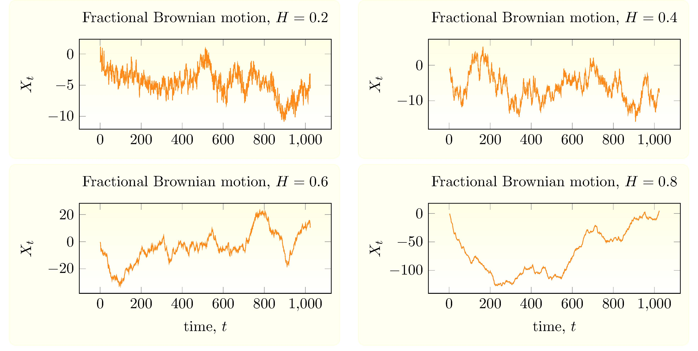
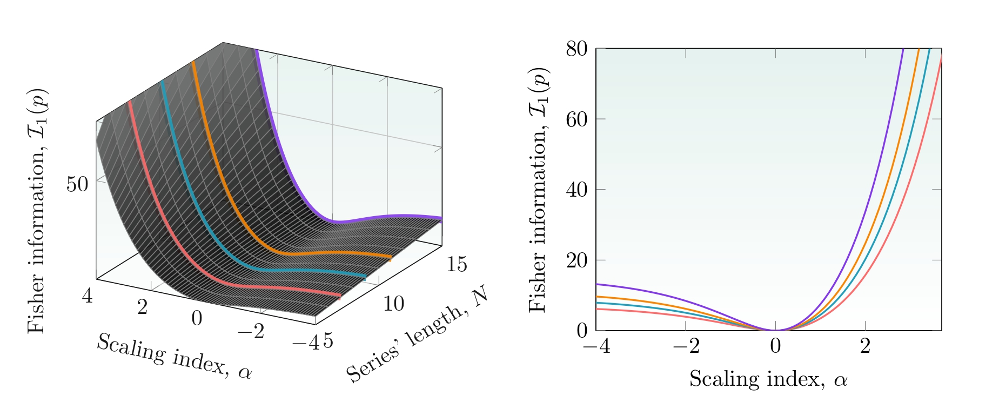
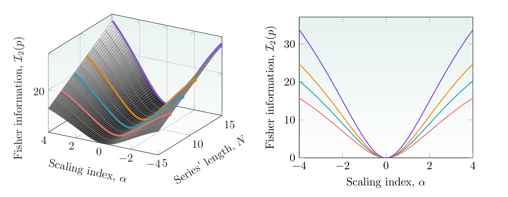

Fractals and Wavelet Fisher's information
WITCOM 2023
Dr. Julio César Ramírez-Pacheco
Presentación en: https://monoxide2000.github.io/slidesWITCOM
Contenido
- Introducción, motivación.
- Procesos con invarianza en escala.
- Análisis wavelet de procesos $1/f^{\alpha}$.
- Medidad de información de Fisher
- Medidas de información de Fisher para procesos $1/f^{\alpha}$.
- Aplicaciones y conclusiones.
Introducción y motivación
- Los procesos fractales o procesos $1/f^{\alpha}$ aparecen en diversos campos de la ciencia.
- Secuencias DNA, tráfico de redes, flujos turbulentos, tiempo de inter-latido, etc.
- Una forma de caracterizar estos procesos es mediante el valor del parámetro $\alpha$.
- Otra forma popular, es mediante el uso de medidas basadas en teoría de la información definidas en el dominio wavelet, en especial medidas de información de Fisher.
Introducción y Motivación: Cont.
- El objetivo del presente trabajo es mostrar el potencial de las medidas de información de Fisher para el análisis de señales fractales.
- Se sugieren aplicaciones basados en los resultados de aplicar esta medidad en procesos $1/f^{\alpha}$.
Procesos con invarianza en escala
Sea $(X_t)_{t \in \mathbb{R}}$ una señal aleatoria. $X_t$ es un proceso
con invarianza en escala (también llamado proceso $1/f^{\alpha}$) de índice si su densidad
espectral de potencia (PSD) $\{\Gamma(\nu), \nu \in (A,B)\}$ satisface:
$$
\Gamma_{X}(\nu) \sim c_\gamma |\nu|^{-\alpha}
$$
Dependiendo de $A$, $B$ y $\alpha$, se pueden obtener varios procesos conocidos.
Procesos FGN


Procesos FBM
Análisis wavelet de señales $1/f$
Sea $(X_t)_{t \in \mathbb{R}}$ un proceso aleatorio de valores reales, entonces su transformada discreta wavelet (DWT), $d_X(j,k)$ está dada por: $$ d_X(j,k) = 2^{-j/2} \int_{\mathbb{R}}{X_t \psi(2^{-j}t-k) dt} $$
Para procesos fractales se tiene: $$\mathbb{E}|d_x(j.k)|^2 = 2c_H^2 2^{-j \alpha} \int_{0}^{\infty}{\nu^{\alpha} |\Psi(\nu)|^2} d\nu$$
Análisis wavelet de señales: Cont.
- Utilizando el concepto de energía promedio dado por: $$ \mathcal{E}_j = \frac{1}{N_j}\sum_{k}{\mathbb{E}_j|d_x(j,k)|^2} = \mathbb{E}|d_X(j,k)|^2$$
- Finalmente, la energía wavelet relativa (RWE), que representa un función de probabilidad está dada por: $$ p_j = \frac{\mathcal{E}_j}{\mathcal{E}_{tot}} = 2^{(j-1)\alpha} \frac{1-2^{\alpha}}{1-2^{\alpha N}} $$
Información de Fisher: Definición 1
Usando la fórmula: $$ \mathcal{I}_1(p) =\int_{a}^{b}{\frac{\left(p' (x)\right)^2}{p(x)} dx} = \sum_{j=0}^{N-1}{\frac{\left(p_{j+1}- p_j\right)^2}{p_j}} $$
y la RWE, entonces la FIM queda: $$ \mathcal{I}_1(p) = \frac{1-2^{\alpha(N-1)}}{1-2^{\alpha N}} \times \left(2^\alpha-1\right)^2 $$
Información de Fisher: Definición 2
Usando la fórmula: $$ \mathcal{I}_2(p) = 4\int_{a}^{b}{\left(\frac{d}{dx}\sqrt{p(x)}\right)^2} = 4 \times \sum_{j=0}^{N-1}{\left(\sqrt{p_{j+1}}-\sqrt{p_j}\right)^2} $$
y la RWE, entonces la FIM queda: $$ \mathcal{I}_2(p) = 4\times \frac{1-2^{\alpha(N-1)}}{1-2^{\alpha N}} \times \left(2^{\alpha/2}-1\right)^2 $$
Información de Fisher: Definición 3
Usando la fórmula: $$ \mathcal{I}_3(p) =\int_{a}^{b}{p(x)\left(\frac{d}{dx}\ln p(x)\right)^2} = \sum_{j=0}^{N-1}{p_j\left(\ln \frac{p_{j+1}}{p_j}\right)^2} $$
y la RWE, entonces la FIM queda: $$ \mathcal{I}_3(p) = \frac{1-2^{\alpha(N-1)}}{1-2^{\alpha N}} \times \left( \ln(2^\alpha)\right)^2 $$
FIM Definición 1
FIM Definición 2
FIM Definición 3

Conclusiones
- El presente artículo presentó la extensión de tres definiciones de la medida de información de Fisher en el dominio wavelet.
- Las medidas de información de Fisher son crecientes para señales correlacionadas, decrecientes para señales no correlacionadas y sero para un ruido blanco.
- Las medidas de información de Fisher pueden usarse para la clasificación de señales fractales.